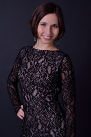

Ladies’ School - первая в Харькове школа юных леди, которая комплексно охватывает все аспекты развития девочки: от базовых правил этикета и ухода за собой, до основ финансовой грамотности и презентации себя в обществе.
Система обучения
9
месяцев3
раза в неделю2,5
часа15
учениц в группе
Формат занятия
Программа школы
Программа обучения в разных возрастных категориях отличается стилем, подачей и объемом информации.
Интеллектуальная часть
На протяжении всего года участницы будут заниматься по трем направлениям:
-
Здоровая Леди:
- - Психология
- - Питание
- - Дерматология
- - Косметология
- - Гинекология
-
Эффектная Леди:
- - Этикет
- - Имидж и стиль
- - Красота (визаж и парикмахерское искусство)
- - Фото- и видеопластика
- - Культурология
- - Продюсерский центр
- - Тайм менеджмент
- - Основы фин грамотности
-
Талантливая Леди:
- - Актерское мастерство
- - Ораторское искусство
- - Музыка, вокал
- - Живопись
- - Кулинария
- - Швейное дело
Международные отношения
В школе будет изучаться международная дипломатия и иностранные языки: английский и французский, в зависимости от выбранной ученицами группы. Формат занятия делится на 2 части: просмотр мультфильмов и фильмов на иностранном языке и общение. Особое внимание уделяется произношению. С ученицами будут заниматься высококлассные профессионалы, а также носители языка.
Физическая часть
Девочки на протяжении года смогут познакомиться с разными стилями танцев и дефиле.
-
Танцы:
- Ballet
- Latin
- Stretching
- Fitnes
- Contemporary
- Jazz
- Modern -
Дефиле:
Девочки освоят навыки поведения на сцене. Занятия помогут им правильно держать осанку, красиво двигаться и дефилировать в разных тематических стилях. Прежде всего, уроки дефиле помогают раскрыть яркую индивидуальность девочек и, конечно же, позволяют маленьким леди демонстрировать наряды во всем их блеске и разнообразии. Каждое практическое занятие заканчивается фееричным и запоминающимся для детей выступлением.
А также
- Мастер классы по верховой езде, флористике, фигурному катанию, вокалу, игре на музыкальных инструментах, танцам от Народных Артистов Украины, чемпионов Европы и не только.
- Мероприятия (выступление и встречи со звездами и успешными людьми в разных направлениях, а также вечеринки и итоговые мероприятия для участниц - экзамены на достижение титулов, выпускной).
- Фотосессии и видеосъёмки. На протяжении всего обучения у учениц школы будет много тематических фото- и видео-съемок. Все они будут записаны на диск и выданы девочкам в конце года.
При зачислении в школу каждая воспитанница в подарок получает сертификат на лицензионное биометрическое тестирование по отпечаткам пальцев - эффективный способ определения генетических способностей.
Записаться в школуВозрастные категории и график занятий
- от 6 до 7 вт, чт, сб
- от 8 до 10 вт, чт, сб
- от 11 до 13 пн, ср, пт
- от 14 до 16 пн, ср, пт
Место проведения занятий
Данное помещение с 1815 года было школой и гимназией для юношей. В помещении находятся старинные фрески под защитой ЮНЭСКО, одна из которых находится в нашем зале и будет ярким эстетическим и энергетическим дополнением атмосферы в нашей школе.
Ценности Ladies’ School
-
Многогранность
Мы помогаем Вашему ребенку открыть для себя все разнообразие сфер деятельности, сбалансировано развиваться во всех направлениях, а самое главное, выявить истинные склонности и потенциал в одном из направлений, которое станет основным в обучении.
-
Комплексность
Все множество направлений в школе являет собой единую целостную базу знаний для гармоничного развития истинной леди как Здоровой, Талантливой и Эффектной Леди в современном обществе.
-
Индивидуальный подход
Мы понимаем, что каждая наша девушка - принцесса, поэтому всем воспитанницам будет обеспечено личное внимание педагогов и коучей школы.
-
Профессионализм
В каждом из направлений преподают исключительно эксперты в своей отрасли, за плечами у которых огромный опыт и умение работать с детьми.
-
Раскрытие потенциала
Мы уверены в том, что каждый ребенок талантлив в той или иной сфере, наша задача разглядеть этот талант и помочь ему раскрыться.
-
Достоинство
Осознание своей абсолютной женской ценности. Раскрытие своей природы через уважение своих желаний и предпочтений.
Миссия Ladies’ School
Создание комплексного образа счастливой и успешной девушки в лице дочери, жены и мамы, благодаря формированию сознания истинной леди в жизни каждой девочки с самого детства.
За год обучения воспитанницы Ladies’ School получат
-
Титул Леди
от Ladies’ School и диплом об окончании школы -
Занятий
-
Дневник Ladies' School
-
Профессионалов
-
Диск с видео и фото с занятий в школе и мероприятий
Только для участниц школы - закрытый мастер-класс от двукратного чемпиона мира по бальным танцам Вадима Гарбузова
Записаться в школуПреподаватели школы
-
-
Светлана Ивановна Колыванова-Попеску Балерина, балетмейстер, балетный педагог
Народная артистка Украины.
Лауреат международного конкурса артистов балета в Варне (Болгария).
Народная артистка УССР (1968).
Орден Трудового Красного Знамени.
Орден «За заслуги» III степени (1997).
Орден княгини Ольги ІІІ степени.
Почётный гражданин Харькова (2002).
Знак «Человек года» (2005).
Лауреат конкурса «Народное признание» (2006). -
Вадим Гарбузов Бальный танцор
Канадско-австрийский бальный танцор, полуфиналист чемпионата мира по десяти танцам 2006 года в любителях, победитель в австрийских танцах со звездами 2012 и 2014 годов, чемпион мира 2015 года по профессиональному фристайлу в латине, 2х кратный чемпион мира по бальным танцам.
-
Александр Кварта Исполнитель, певец
Автор многих песен, исполнителями которых стали Алла Пугачева ("По дороге к солнцу") и другие.
Участник проекта «Украина имеет талант" с песней "Сеньорита, я влюблён!".
Участник проекта «Минута Славы» в Москве. -
Лена Пуль Хореограф, педагог, танцовщица
Победительница проекта «Танцы со звездами» и суперфиналистка шоу «Танцуют все-3», финалистка «Танцуют все. Возвращение героев".
Вице-чемпион Украины, член сборной Украины на чемпионате мира по бальным танцам.
Неоднократный член жюри всеукраинских и международных конкурсов.
Ассистент и партнерша Влада Ямы в шоу «Танцуют все».
Ассистент хореографа Татьяны Денисовой в «Танцуют Все - 8".
Эксперт ток-шоу "Все буде добре" (СТБ).
Основатель и хореограф-постановщик танцевальной школы PULS DANCE SCHOOL в Харькове.
Судья телевизионного шоу «Взiрець таланту».
Создательница фитнес-программы «ТТ».
Хореограф-постановщик танцевальных спектаклей и миниатюр. -
Анастасия Пуль Преподаватель танцевальной школы
Преподаватель танцевальной школы PULS DANCE SCHOOL в направлениях латино-американские танцы, fitnes, stretching.
Участник различных мастер классов хореографов Европы и мира. -
Влад Бондаренко Актер
Организатор первого театрального шоу фестиваля "Платформа 77".
Режиссер Молодежного театра "Кузнецы".
Глава Молодежного городского совета по вопросам культуры и содержательного досуга молодежи при Харьковском городском голове. -
Дарина Митченко Профессиональная модель
Профессиональная модель со стажем 10 лет модельной карьеры во многих странах (Китай, Япония, Италия, Франция, Германия и другие).
Вошла в 10ку из 40 участниц в конкурсе "Miss World Next Top Model".
Победительница "Queen of Bikini".
Снималась в съемках для Vogue China,в журналах Women's Health, Radikal Hayat и в рекламных компаниях - Gepur, Pijama, Gizia. -
 Ибрагим Юлия Сергеевна
Практический психолог
Ибрагим Юлия Сергеевна
Практический психолог
Кандидат педагогических наук (PhD), доцент кафедры социальной работы и социальной педагогики КЗ «Харьковская гуманитарно-педагогическая академия» Харьковского областного совета, практический психолог, учитель младших классов, президент общественном организации «Ассоциация многодетных семей «АММА», создатель авторского курса для будущих мам «Мама, я уже живу!» руководитель городских социальных проектов «Академия «АММА» (с 2011), «Мы - украинцы!» (с 2014), «Джерельце» - клуб единства поколений (с 2015), инициатор и организатор фотовыставок «Мама 21 века» (2012), «Папа 21 века» (2013), «Семья 21 века» (2014) Лауреат конкурса «Молодой человек года» (2015)
-
Евгений Воронин Визажист, гримёр
Призёр Конкурса стилистов "Молодые таланты Украины",
Гран-при конкурса стилистов "Парад невест",
Победитель конкурса стилистов "Стильный ринг",
Чемпион Харькова по визажу,
Чемпион западной Украины по визажу,
Чемпион Украины по визажу,
Судья многих конкурсов красоты, чемпионата визажистов,
Стилист конкурса красоты и талантов "Королева Украины". -
Оля Доценко
(Polina Chocolate) MakeupartistВостребованный мастер - преподаватель в beauty индустрии с опытом работы более 7 лет.
Владелица одноименной школы-студии мейкапа "POLINA CHOCOLATE STUDIO Make Up Professional Beauty".
Основатель авторской методики обучения по макияжу и курса повышения квалификации визажистов.
Представитель декоративной косметики Make Up Designory USA.
Соучредитель социального проекта Garage Sale Kharkov.
Совладелица шоу рума Starlion, магазин дизайнерской одежды и украшений. -
Виктор Асна-Ерзиков Певец, фотомодель, общественный деятель
Работал в рекламных компаниях: линии одежды - «LB-Donna», «Umo Mission», косметики Голливудской школы визажа - «MUD-designory for New-York», Польской косметики для юношей и мужчин - «JOKO», а также представлял в качестве модели Харьковскую команду парикмахеров на конкурсе стилистов «YourHairAwards - 2013» (победа).
Победитель вокальных конкурсов «ВЕРБНА НЕДІЛЯ - 2010», «Золотая Нотка - 2011».
Соучредитель интернет ресурс - Первый светский таблоид Харькова «KPV NEWS».
Соучредитель премии награждающей лучшие СМИ города • «KHARKIV KPV NEWS AWARDS 2013».
Директор концертной деятельности хора Златы Огневич (до 2015 г).
Директор конкурса красоты «MISS MODEL PLUS UNIVERSE».
Учредитель и руководитель продюсерского центра по созданию и продвижению теле-медиа продукта «KPV Production» (с 2015 г.)
Режиссер социальной рекламы о проблеме насилия над детьми в семье.
Режиссер цикла соц.реклам-флешмобов "Ми вмiємо бути щасливими".
Автор и ведущий вечернего Телешоу Первый Светский таблоид Харькова «KPV NEWS».
Работал для каталога мужских очков от «GUCCI», «Giorgio Armani», «РRАDА» для «z95.com.ua»
Звездный эксперт первого всеукраинского реалити-шоу «Детская СуперМодель Украины» (первый и второй сезон). -
Аким Ерзиков Общественный деятель, бизнесмен, журналист
Общественный деятель, бизнесмен, журналист, пиар-менеджер, неоднократно входивший в рейтинги успешных харьковчан.
Заместитель директора Продюсерского центра «KPV production».
Главный редактор Первого светского таблоида Харькова «KPV NEWS».
Руководитель премии в области СМИ «Kharkiv KPV NEWS Awards».
Создатель конкурса красоты «Miss Model plus Universe».
Автор, режиссер и ведущий телевизионного вечернего шоу «KPV NEWS».
Руководитель социального проекта «Эти проблемы современного общества».
Автор и режиссер научно-исторического проекта «Эпоха». -
Марина Костенко Психолог, психотерапевт
Кандидат юридических наук, доцент, правовед, психолог, психотерапевт, гипнотерапевт, консультант по применению методов телесно-ориентированной психотерапии в коррекции нарушений сексуального здоровья в рамках семейно-психологической помощи; Национальный юридический университет Украины им. Ярослава Мудрого, Всеукраинский институт клиент-центрированной и экспириентальной психотерапии, Институт семейной психологии и консультирования, Международная ассоциация “Ренессанс”.
-
Татьяна Чаговец Историк, искусствовед, экскурсовод
Историк, выпускница ХНУ им. Каразина. Востребованный преподаватель по истории искусств, этики, истории города Харькова.
Стаж работы в этой области 10 лет. -
Хасая Светлана Анатольевна Практический психолог
Практический психолог Харьковского национального университета городского хозяйства им. А.Н.Бекетова, член УСП (Українська спілка психотерапевтів), психотерапевт по методу символдрама, тренер, медиатор, коуч.
-
Инна Муратова Тренер, психолог
Консультирующий психолог, тренер международных проектов, фасилитатор, автор тренинговых программ.
Представитель общественной организации "ЦПР"РАЗОМ". -
 Николь Онипко
Cтилист
Николь Онипко
Cтилист
Fashion-blogger и стилист, ведущая мастер-классов по стилю.
В качестве стилиста сотрудничает с рядом дизайнеров и шоу-румов по созданию образов и лукбуков, занимается продвижением различных брендов. -
Александра Кучер Преподаватель английского языка
Частный преподаватель английского языка,
Переводчик и филолог,
Журналист,
Активный участник городских Speaking club,
Преподаватель в английском детском лагере "Bereg Camp". -
 Анна Мацюк Филолог, переводчик, преподаватель французского языка
Выпускница ХНУ им. В.Н. Каразина. Участник международных стажировок и повышения квалификации во Франции: г. Марсель – 2008г., г. Безансон –2009г., г. Париж – 2013г. Опыт работы преподавателем – 7 лет. Автор статей по французскому языку и литературе. Участник международных конференций.
-
Евгений Савенко Преподаватель актерского мастерства
Актер театров "Сцена" и "Каламбур".
Режиссер театра МДТ.
-
И другие
Команда Ladie's School
-
Дария Михалевич Основатель
Основатель проектов:
• ивент агентство Muraha,
• ивент агентство DAR,
• сообщество Wish Women’s Club,
• Директор курсов программирования ItBursa (c 2015 по 2016).
Организатор более 50 образовательных и развлекательных городских мероприятий. -
 Алла Карасюк
Основатель
Алла Карасюк
Основатель
• Директор департамента по связям с общественностью международного фонда "Artworld foundation".
-
Борис Абрамович Киперштейн Генеральный директор
• Создал первую в Украине частную школу, которая успешно существует и по сегодняшний день ("Старт-школа"),
• Был Президентом Ассоциации частных учебных заведений Украины,
• Директор Яковлевской общеобразовательной школы,
• Лауреат областного конкурса "Учитель года" в номинации "Директор школы ". -
Ольга Чичина Идейный вдохновитель
• Депутат Харьковского городского Совета,
• Основатель общественной организации Link,
• Организатор более 100 массовых проектов на развитие города Харькова. -
Дарина Карасюк SMM менеджер
• PR менеджер,
• SMM специалист с опытом,
• Творческая личность, профессиональная танцовщица (хип-хоп, джаз фанк),
• Вокалистка, выступала на многих концертах. -
Дарья Лисицкая Маркетолог
• PR manager студии Event дизайна JennyArt Group,
• Глава молодежной организации ХНЭУ им.С.Кузнеца,
• Победитель Международного Конкурса "Golden compas" в сфере рекламы и PR,
• Активный общественный деятель,
• Победитель городского конкурса "Инновационных проектов",
• Опыт работы в крупнейших компаниях города Харькова в сфере брендинга, рекламы, маркетинга и ивентов,
• Основатель и руководитель ивент агентства DAR. -
Александра Мальцева Организатор учебного процесса
• Дипломированный специалист в области "Менеджмент",
• Основатель и экс-президент Дебатного Клуба ХНУГХ,
• Участница международных стажировок.
Считаю, что для организации важны семейные ценности и современные инновации. -
Яна Ермакова Координатор отдела Соавторства с родителями
• Бизнес -леди.
• Основатель бренда MykidsStars.
• Генеральный директор туристической компании MyKidsTravel.
• Дважды обладатель премии Мама года 2015 и 2016.
И конечно же, любящая мама, нашей Мини-мисс французский бульвар 2016 и лицо Dolce&Gabbana Аниточки. -
Елена Пахнина Наставник группы
Магистр технических наук (аналитик). Магистр английской филологии. Полное музыкальное образование, преподаватель по классу фортепиано. Сертифицированный специалист в области раннего детского развития, песочный терапевт, арт-терапевт. Коуч. Методист, занимается разработкой развивающих пособий для детей. Писатель. Автор ряда статей. Лауреат конкурса фортепианной подготовки в номинации «Исполнители классической и современной музыки». Награждена многочисленными дипломами и отличиями.
-
Александр Ивахненко Консультант по маркетингу и продажам
• Исполнительный директор IT Recruitment & Management 3.0
• СЕО Smart Software Development School
Стоимость обучения
-
Месячный абонемент
1750 грн Записаться -
Полугодовой абонемент
8750 грн Записаться
(5 месяцев) -
Годовой абонемент
15750 грн Записаться
(9 месяцев)
Стоимость обучения 1 месяц - 1750 грн = 146 грн одно занятие!
* Ограниченное количество участниц в каждой группе
В рамках программы школы - мастер класс от Народной Артистки Украины балерины Светланы Ивановны Колывановой-Попеску
Записаться в школуFAQ
Какой процесс зачисления в школу?
- Регистрация на сайте и выбор возрастной категории,
- Оплата обучения через сайт или в отделении банка,
- Подписание договора на период обучения,
- Консультация с детским психологом перед началом занятий.
Получат ли участницы школы диплом об окончании?
По окончанию года обучения каждая воспитанница участница Ladies’ School получает:
- Титул Леди Ladies’ School
- Диплом об окончании Школы Юных Леди
Можно ли продолжать обучение в школе после года обучения?
После окончания школы воспитанница может перевестись в старшую по возрасту группу. А также каждая девочка получает официальную рекомендацию от Школы на выбранное ею направление в развитии своего таланта и список вариантов дальнейшего специализированного обучения у партнеров школы.